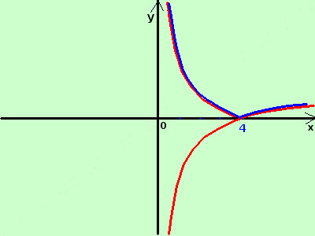

|
sviluppo Data la seguente funzione costruitene approssimativamente il grafico y = |logx -3| al solito, con logx intendiamo il logaritmo naturale di x  considero la funzione senza modulo y = logx - 3 e' la funzione logaritmo spostata verso il basso di 3 unita taglia l'asse delle x nel punto x = 4 Disegno la curva (in rosso) ruotando attorno all'asse x perpendicolarmente al piano cartesiano ribalto la parte sotto l'asse x sopra l'asse stesso in blu il risultato finale |